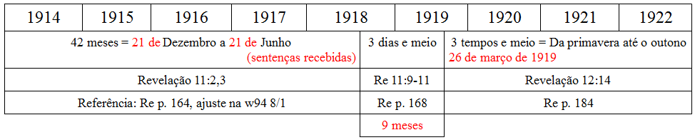
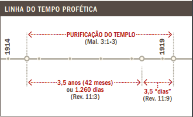

Grande ênfase é dada ao ano 1919, sendo este o ano em que Jesus supostamente escolheu a Organização Torre de Vigia e seu Corpo Governante para representá-lo na Terra. Mas as evidências bíblicas usadas para dar apoio a esse ano são ilógicas e inconsistentes.
O ano 1919 é descrito como um tempo de libertação espiritual, o ano em que o Corpo Governante da Organização foi designado como o Escravo Fiel.
O “escravo fiel e discreto” foi designado sobre os domésticos de Jesus em 1919. Esse escravo é o pequeno grupo de irmãos ungidos que servem na sede mundial durante a presença de Cristo e que estão diretamente envolvidos na preparação e distribuição do alimento espiritual. Quando os membros desse grupo trabalham em conjunto como Corpo Governante, eles atuam como o “escravo fiel e discreto”. jw.org Relatório da reunião anual de 2012
“De maneira similar, a partir de 1919, Jeová constituiu a semente da mulher em nação espiritual.” Revelação – Seu Grandioso Clímax (re) p.184 par. 25
“Seu olho se tem fixado constantemente neles desde que foram espiritualmente libertados, em 1919.” A Sentinela – w94 01/03 p. 17 par. 15
Existe algum apoio bíblico para afirmar que 1919 tem significado profético? A base para se chegar em 1919 apóia-se quase totalmente em Apocalipse capítulo 11. Este capítulo descreve:
- “duas testemunhas”
- um período de 1260 dias
- um período de três dias e meio
- e finalmente “muito medo” para as nações.
Apocalipse 11
3 Farei as minhas duas testemunhas profetizar por 1.260 dias vestidas com pano de saco.”” …
7 Quando tiverem terminado de dar seu testemunho, a fera que sobe do abismo guerreará contra elas, as vencerá e as matará. …
9 Povos, tribos, línguas e nações olharão para os seus corpos por três dias e meio …
11 Depois dos três dias e meio, entrou neles espírito de vida da parte de Deus, e eles ficaram de pé, e os que os viram ficaram com muito medo.
A seguir, mostraremos a linha de raciocínio da Organização para justificar porque Apocalipse 11 se aplica a ela mesma e à seleção do Corpo Governante em 1919. Os pontos não numerados mostrarão que cada argumento dela é sem lógica. (Saiba que parte desse raciocício mudou em 2013, mas falaremos disso mais abaixo).
- As “duas testemunhas” supostamente fazem um paralelo com o Escravo Fiel e Discreto.
- A primeira vez que as “duas testemunhas” são mencionadas na Bíblia é em Apocalipse 11, mas a Organização mesmo assim diz que elas fazem um paralelo com o “escravo fiel” de Mateus. Não há base bíblica para fazer esse paralelo. É apenas o desejo da Organização.
- A Organização usa 1914 como ponto de partida para os 1260 dias, o ano em que Jesus supostamente começou a reinar no céu.
- Não existe base bíblica para afirmar que Jesus começou a reinar em 1914, e temos um artigo discutindo só isso.
- A Organização começa a contar os 1260 dias de Apocalipse 11:2,3 em Dezembro de 1914 (re p.164 par.12) Afirmam que os 1260 dias de Apocalipse 11:2,3 terminam em Junho de 1918. Durante esse período de 1914 a 1918, o templo é pisado, o que supostamente prefigura os três anos e meio entre o batismo de Jesus e a ocasião em que ele derruba as mesas dos cambistas no templo. (re p.32, quadro na página 32) Em Junho de 1918, Jesus veio inspecionar sua organização terrestre, culminando na prisão dos diretores da Organização Torre de Vigia. (re p. 164, 167)
- Afirma-se que o governo de Jesus começou em Outubro de 1914, mas afirma-se que os 1260 dias, ou 42 meses, começaram em Dezembro. Nenhuma explicação para a diferença de 2 meses foi dada. Isso é simplesmente ignorado, porque a Organização está tentando harmonizar um período da história que não se encaixa aí.
- 1260 dias, três anos e meio, e 42 meses são todos baseados no calendário lunar de 360 dias, mas a Organização os aplica ao calendário solar.
- Depois de 9 meses, em março de 1919, os diretores da Torre de Vigia foram soltos. Esse período de 9 meses supostamente é baseado nos “três dias e meio” de Apocalipse 11:9-11. (re p.169 pars. 23-24)
- Eles dizem que os 1260 dias de Apocalipse supostamente equivalem a 42 meses literais, mas afirmam que os “três dias e meio” da mesma passagem são figurativos e representam 9 meses. (ou seja, três anos e meio = três anos e meio, mas três dias e meio = 9 meses).
- Isto resultou em grande temor dentre todas as outras religiões. (Apocalipse 11:11) “Ocorreram deveras grandes convulsões no domínio da religião. O chão parecia mover-se debaixo dos líderes das igrejas tradicionais, quando este corpo de cristãos revivificados começou a trabalhar.” (re p.170 par. 25)
- A libertação de Rutherford da cadeia foi irrelevante para a maioria das pessoas, e dificilmente pode-se afirmar que “os que os viram ficaram com muito medo”. (Apocalipse 11:11)
- Afirmam que a libertação dos diretores da Torre de Vigia da cadeia em 1919 corresponde com a escolha que Jesus fez do Corpo Governante como seu escravo. “Os cristãos ungidos que sobreviveram ao período de prova de 1914-19 foram libertados da influência dominadora do mundo e de muitas práticas religiosas, babilônicas. Os do restante avançaram como povo purificado e refinado, que prontamente oferecia sacrifícios de louvor a Deus e tendo a garantia de que, como povo, lhe eram aceitáveis.” (A Sentinela w98 15/5 p. 17 par. 5) “Em 1919, a purificada classe do escravo podia esperar atividades sempre maiores.” (A Sentinela w93 1/5 p. 16 par. 4)
- Não existe motivo pra pensar que a libertação dos diretores da Torre de Vigia da cadeia deveria indicar que Jesus os havia escolhido como seu Escravo Fiel. Quando saíram da prisão, eles continuaram pregando exatamente a mesma doutrina de antes da prisão, incluindo as falsidades, como a profecia de que o fim viria em 1925.
- “Quanto tempo durou este alívio para a semente da mulher de Deus? Revelação 12:6 diz que foi por 1.260 dias. Revelação 12:14 chama este período de um tempo, tempos e metade de um tempo; em outras palavras, três tempos e meio. De fato, ambas as expressões representam três anos e meio, estendendo-se, no Hemisfério Norte, da primavera de 1919 ao outono de 1922. Foi um período de recuperação e de reorganização animadoras para os da classe restaurada de João. … Depois de 1922, Satanás expeliu uma onda de perseguição contra as Testemunhas.” (re p.184-185 pars. 26-27)
- Será que alguém acredita que o que aconteceu com as Testemunhas de Jeová em 1922 (sem ninguém vivo dessa época pra lembrar) são realmente o cumprimento da profecia de Apocalipse?
Nenhum dos passos acima pra se chegar a 1919 são convincentes, de forma alguma. A maior parte do raciocínio é, na verdade, bem ilógica e sem fundamento.
A tabela a seguir foi obtida das anotações feitas no Escola de Treinamento Ministerial (ETM) em meados do ano 2000. As partes em vermelho são anotações pessoais do aluno:

Em 2013, este ensino foi simplificado, retirando-se o ano 1918 da jogada.
“Para resolver essa questão, Jesus começou a inspeção do templo espiritual em 1914. Essa inspeção e obra de purificação abrangeu um espaço de tempo — de 1914 até a parte inicial de 1919.* … Nota de rodapé: Parágrafo 6: Esse é um ajuste no entendimento. Antes, pensávamos que a inspeção de Jesus havia ocorrido em 1918.” (A Sentinela w13 15/7 p.11 par.6)
O artigo explica que, já que Jesus purificou seu templo duas vezes, isso mostra que haveria um trabalho de purificação contínuo entre 1914 e 1919. No entanto, isso não ajuda a esclarecer o motivo de 1919 ter alguma relevância bíblica, porque nenhum texto bíblico foi citado para dizer quanto tempo a purificação duraria.
A Sentinela w14 15/11 junta os 1260 dias com os 3 dias e meio para chegar em 1919.
“Quanto tempo durou essa inspeção e purificação? De 1914 à parte inicial de 1919. Esse período inclui tanto os 1.260 dias literais (42 meses) como os três dias e meio simbólicos mencionados no capítulo 11 de Revelação.” (A Sentinela w14 15/11 p.30)
Este raciocínio não faz sentido algum, já que a Organização apresenta os 1260 dias como literais, os 3 dias e meio como simbólicos, e mesmo assim soma os dois para tentar explicar o período de 1914 a 1919. A linha do tempo abaixo foi retirada da revista e ilustra esse absurdo:

A linha do tempo não especifica o dia exato do início e do fim dos 1260 dias, porque eles não querem alinhá-los a nenhuma ocorrência específica, como fica detalhado no artigo 1260 dias.
O que aconteceu em 1919
A outra linha de raciocínio para apoiar 1919 é histórica, cheia de afirmações da própria Organização de que ela mesma foi escolhida por Jesus como a única organização pura que O representa.
A Organização ensina que eles ficaram num cativeiro Babilônico de 1914 a 1918. Isso culminou na prisão dos diretores da Sociedade Torre de Vigia.
*** A Sentinela – w73 1/7 p. 404 ***
A moderna evidência histórica mostra que, durante a guerra mundial de 1914-1918, os do restante dedicado, batizado e ungido das testemunhas cristãs de Jeová foram levados ao cativeiro babilônico.
*** Livro Proclamadores do Reino de Deus – jv cap. 15 pp. 211-212 ***
Pouco depois disto, os membros da junta administrativa da Sociedade foram presos, e em 21 de junho de 1918, foram sentenciados a 20 anos de prisão. A pregação das boas novas ficou a bem dizer paralisada.
Em 1919, Jeová os libertou da prisão.
*** Livro Proclamadores do Reino de Deus – jv p. 720 ***
1919 Os diretores e associados da Sociedade são libertados sob fiança, em 26 de março;
*** A Sentinela – w88 15/9 p. 15 par. 21 ***
Comparativamente, após um cativeiro babilônico, o restante ungido foi libertado em 1919 e, sob a direção do espírito de Deus, o outrora desolado “solo” do Israel espiritual tem sido purificado.
A razão de Jeová ajudá-los é porque eles estavam purificados, inteiramente teocráticos, e fornecendo alimento espiritual.
*** A Sentinela – w72 15/1 p. 53 par. 10 ***
Isto se viu especialmente durante o período da Primeira Guerra Mundial. No entanto, Jeová limpou a sua organização e a tornou inteiramente teocrática.*** A Sentinela – w07 1/4 p. 22 par. 5 ***
“Ao chegar” para inspecionar o “escravo” em 1918, Cristo encontrou um restante de fiéis discípulos, ungidos pelo espírito, que desde 1879 usava esta revista e outras publicações baseadas na Bíblia para fornecer “alimento [espiritual] no tempo apropriado”. Ele os reconheceu como seu instrumento coletivo, ou “escravo”, e, em 1919, confiou-lhes a administração de todos os seus bens na Terra.
Não há absolutamente nenhuma base para essas afirmações. Não há evidências de que tenha havido a seleção por Jesus nem a purificação da doutrina. Eles ainda usavam a cruz, comemoravam aniversários e Natal, e seguiam um conjunto de doutrinas muito diferentes das de hoje.
Os três destaques dessa época foram o lançamento do livro O Mistério Consumado em 1917, a brochura Milhões que Agora Vivem Jamais Morrerão em 1918, e o periódico Idade de Ouro em 1919.
*** A Sentinela (em inglês apenas, tradução minha) – w55 1/4 p. 206 ***
Na segunda metade 1917, os fiéis pregadores de frente da classe do ‘escravo discreto’ começaram a distribuir animadamente o livro O Mistério Consumado, pois dentro de 7 meses, a impressoras da Sociedade estavam bem ocupadas com 850.000 edições. ‘A venda do sétimo volume foi maior que a de qualquer outro livro conhecido, no mesmo espaço de tempo, com exceção da Bíblia.’*** Livro Proclamadores do Reino de Deus – jv p. 719 ***
1918 O discurso “O Mundo Terminou — Milhões Que Agora Vivem Talvez Jamais Morram” é proferido pela primeira vez, em 24 de fevereiro, em Los Angeles, Califórnia. Em 31 de março, em Boston, Massachusetts, o discurso é intitulado “O Mundo Terminou — Milhões Que Agora Vivem Jamais Morrerão”.
*** Livro Proclamadores do Reino de Deus – jv cap. 15 p. 212 ***
Deu-se um passo altamente significativo em 1919 para corrigir essa situação quando começou a ser publicada a revista The Golden Age (A Idade de Ouro). Esta se tornaria um poderoso instrumento na divulgação do Reino de Deus como a única solução permanente para os problemas da humanidade.
Essas 3 publicações acima são chocantes para qualquer Testemunha de Jeová de hoje.
É preciso ler O Mistério Consumado para acreditar, porque é uma mancha negra nas publicações da Organização, e hoje em dia a doutrina daquele livro seria rejeitada quase completamente. Ainda é possível achar cópias usadas à venda na internet, e versões em PDF podem ser baixadas (em inglês apenas) neste link ou neste outro link. A página do título afirma que o livro é “A obra póstuma do Pastor Russell”, embora ele tenha sido escrito por Woodworth e Fisher, e publicado com autorização do Rutherford.
Os ensinos desse livro incluem que os últimos dias começaram em 1799, que a segunda vinda de Jesus foi em 1874, e que em 1918 as igrejas cairíam e os ungidos seriam levados para o céu. Também afirma que Jesus é o Alfa e o ômega, e que o cavaleiro do cavalo branco é o Papa. A glória do anjo de Apocalipse 18:1 refere-se a descobertas modernas tais como escola por correspondência, celulóide, o Plano Divino das Eras, máquinas falantes, aspiradores de pó, motores por indução, pasteurização, Canal do Panamá, máquinas de costurar calçados, metrôs subterrâneos, arranha-céus, raios de Roentgen, e ainda diz que Leviatã é a locomotiva a gás. As dimensões da Grande Pirâmide de Gizé confirmam que a colheita começou, e que Apocalipse 14:20 previu a distância do lugar onde O Mistério Consumado foi produzido, em Stranton, até seu destino final de postagem em New York.
O foco principal do discurso e da brochura Milhões que Agora Vivem Jamais Morrerão era apresentar o ensinamento de que o fim chegaria em 1925, ano em que Abraão seria ressuscitado na Terra. Isso tudo é discutido em detalhes no artigo 1925 – Milhões que Agora Vivem Jamais Morrerão.
A Idade de Ouro (The Golden Age), cujo editor era o Woodworth, estava repleta com uma quantidade inacreditável de ciência popular e doutrinas infantilóides, e algumas delas podem ser vistas no artigo Recomendações Médicas.
Nenhuma dessas publicações apresentava alimento espiritual purificado. Pelo contrário, apresentava doutrina sensacionalista e mentiras que são desmentidas pelo Corpo Governante do século 21.
Embora a Organização distorça a história da prisão de Rutherford e seus associados como se fosse cativeiro Babilônico, a verdadeira razão deles terem sido presos foi sedição, ou revolta contra as autoridades. O Mistério Consumado acusava outras religiões e encorajava revolta contra o governo dos Estados Unidos.
*** O Mistério Consumado, página 251 da edição de 1917 (em inglês) ***
“No caso Shaffer contra Estados Unidos (Corte do 9º Circuito de 1919), o réu foi considerado culpado de possuir e enviar cópias do livro O Mistério Consumado, que continha o trecho “em pé diante destes, Satanás colocou uma certa alucinação que pode ser melhor descrita pela palavra patriotismo, mas que é, na verdade, assassinato, o espírito do diabo. Se você disser que é uma guerra de defesa contra agressão intolerável e arbitrária, eu devo responder que ainda precisam provar que a Alemanha tem alguma intenção ou desejo de nos atacar. A guerra, em si, é errada. Sua realização será um crime. Não há questão levantada, nenhum problema envolvido e nenhuma causa em jogo que compense a vida de sequer um militar “jaqueta-azul” no mar ou um militar “casaco-vermelho” na vala“. A Corte do 9º Circuito de Apelação decidiu que “o serviço pode ser obstruído quando se ataca a causa motivadora da guerra, e quando se enfraquece a espírito de lealdade que inspira os homens a se alistar para recrutamento a serviço de seu país“.(Stone).” academic.evergreen.edu (Junho de 2007)
*** Anuário de 1976 – yb76 p. 119 ***
Depois de seu período provador de 1917-1919, o povo de Jeová se sujeitou a um escrutínio. Compreendendo que tinha atuado de modo que não obtinha a aprovação de Deus, procuraram o perdão em oração, arrependendo-se de seu proceder anterior. Isto levou ao perdão e à bênção de Jeová. Uma transigência foi o corte das páginas de O Mistério Consumado, isto para agradar aqueles que assumiram a posição de censor. Outra ocorreu quando A Torre de Vigia, em inglês, de 1.° de junho de 1918, declarou: “De acordo com a resolução do Congresso, de 2 de abril, e segundo a proclamação do Presidente dos Estados Unidos, de 11 de maio, sugere-se que o povo do Senhor em toda parte torne o dia 30 de maio um dia de oração e súplica.” Comentários subseqüentes exaltaram os Estados Unidos e não se harmonizaram com a posição cristã de neutralidade.
Apesar das afirmações feitas acima, no livro O Mistério Consumado, a Organização desistiu das suas ideias e resolveu obedecer humildemente à ordem do governo dos Estados Unidos de remover as páginas 247 a 254 do livro.
Na edição de 1918, a seção abordando o subtítulo “Saindo da boca do dragão” (Out of the mouth of the dragon, originalmente) foi reduzido de 5 páginas para 1 parágrafo.
Os líderes da Organização não foram presos por pregar a verdade sobre o Reino de Deus, mas por tomar partido em questões políticas. Foram soltos por abandonarem seus princípios, obedecendo a ordem de mudar o que eles haviam impresso. Nenhuma dessas ações mostrava que estavam espiritualmente purificados.
Escravo Mau
A Organização critica muito os membros que a abandonaram nessa época, e passou quase um século os descrevendo como a “classe do escravo mau”. (Nota: a doutrina sobre a identidade do escravo mau mudou em 2013)
*** A Sentinela – w72 15/1 p. 53 par. 10 ***
A história hodierna das testemunhas de Jeová mostra que alguns, constituindo a classe do “escravo mau”, fizeram tentativas para assumir o controle da obra de Jeová e do seu povo.
Muitos seguidores da Organização abandonaram-na durante esse período depois de 1914., reconhecendo que a Torre de Vigia é um falso profeta, ensinando enganosamente que o Novo Sistema chegaria em 1914.
Membros destacados se desligaram da organização também, e ficaram ofendidos com a liderança de Rutherford.
*** Livro Proclamadores do Reino de Deus – jv cap. 17 p. 257 ***
Após a morte do irmão Russell, alguns associados de destaque da organização se afastaram.
Depois da morte de Russell, Rutherford assumiu o controle da Sociedade Torre de Vigia. No seu testamento, Russell havia recomendado 5 nomes para a Comissão de Escrita. (A Sentinela de 1/Dezembro/1915, reimpressão p. 5999, em inglês, no artigo “Desejo e Testamento de Charles Taze Russell”). Apesar de não estar incluído nessa lista, Rutherford assumiu a liderança e garantiu sua permanência por meio de uma batalhe legal contra os outros diretores.
Rutherford continuou realizando a impressão do Mistério Consumado sem obter a permissão dos diretores, como exigia o regimento da Organização.
*** Testemunhas de Jeová no Propósito Divino, pág. 70 ***
“Ao meio dia de 17 de Julho de 1917, este livro foi publicado na mesado refeitório de Bethel. Assim como o irmão Russell costumava fazer, o irmão Rutherford deu uma cópia deste livro de presente para cada membro da família de Betel. Caiu como uma bomba. Surpresos com sua publicação, os membros da mesa de diretores que se opunham aproveitaram esta oportunidade e começaram uma controvérsia que durou 5 horas sobre a administração da Organização.“
A Organização tem usado o termo “escravo mau” para manchar a reputação dos seguidores cujas consciências não concordaram com uma organização que provou ser um falso profeta. Além disso, Rutherford atacou, no passado, os diretores da organização que não concordaram com ele quando ele assumiu o controle agressivamente e introduziu uma nova doutrina que era exagerada, ilegal e extremamente constrangedora para ser lida hoje em dia.
O período de 1914 a 1919 é a pior mancha negra na história da Organização, e mesmo assim é descrito como a época em que Jesus os escolheu para liderar Sua organização. O ano de 1914 provou ser uma falsa profecia, e nenhuma única profecia para aquele ano realmente aconteceu. Em 1916, o fundador, Pastor Russel, morreu e Rutherford assumiu a liderança de forma hostil e mergulhada em batalhas legais. A partir daí, ele lançou a base para mudar dramaticamente a religião pelas 2 décadas seguintes.
Cada Testemunha de Jeová deveria preocupar-se profundamente com o fato de a doutrina de 1919 não ter base bíblica e ter sofrido grande manipulação histórica.